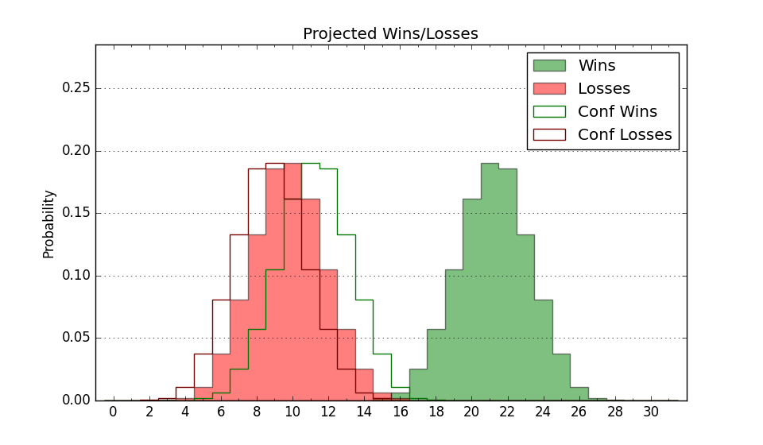

| Home | Game Probabilities | Conferences | Preseason Predictions | Odds Charts | NCAA Tournament |
| City: | Lincoln, Nebraska | |
| Conference: | Big Ten (5th)
| |
| Record: | 3-2 (Conf) 13-3 (Overall) | |
| Ratings: | Comp.: 16.3 (42nd) Net: 16.2 (46th) Off: 112.2 (56th) Def: 96.0 (51st) SoR: 81.6 (25th) |
| Remaining | ||||||
|---|---|---|---|---|---|---|
| Date | Opponent | Win Prob | Pred. | |||
| 1/12 | @ Iowa (49) | 37.0% | L 80-84 | |||
| 1/17 | @ Rutgers (83) | 51.5% | W 67-66 | |||
| 1/20 | Northwestern (64) | 70.4% | W 73-67 | |||
| 1/23 | Ohio St. (41) | 63.4% | W 74-70 | |||
| 1/27 | @ Maryland (93) | 53.2% | W 68-67 | |||
| 2/1 | Wisconsin (15) | 41.0% | L 71-73 | |||
| 2/4 | @ Illinois (11) | 16.1% | L 70-82 | |||
| 2/7 | @ Northwestern (64) | 41.1% | L 69-71 | |||
| 2/10 | Michigan (76) | 76.5% | W 80-72 | |||
| 2/17 | Penn St. (104) | 81.9% | W 80-69 | |||
| 2/21 | @ Indiana (100) | 55.2% | W 75-74 | |||
| 2/25 | Minnesota (95) | 79.5% | W 78-68 | |||
| 2/29 | @ Ohio St. (41) | 33.7% | L 70-75 | |||
| 3/3 | Rutgers (83) | 78.4% | W 71-62 | |||
| 3/10 | @ Michigan (76) | 48.8% | L 76-77 | |||
| Previous | Game Score | |||||
| Date | Opponent | Win Prob | Result | Off | Def | Net |
| 11/6 | Lindenwood (350) | 98.7% | W 84-52 | -4.0 | 7.9 | 3.9 |
| 11/9 | Florida A&M (336) | 98.1% | W 81-54 | -17.2 | 10.6 | -6.6 |
| 11/13 | Rider (292) | 96.7% | W 64-50 | -20.4 | 10.0 | -10.4 |
| 11/15 | Stony Brook (247) | 94.8% | W 84-63 | -2.9 | 0.1 | -2.7 |
| 11/18 | (N) Oregon St. (163) | 83.0% | W 84-63 | 14.3 | -5.4 | 8.9 |
| 11/22 | Duquesne (99) | 80.5% | W 89-79 | 32.9 | -27.4 | 5.6 |
| 11/26 | Cal St. Fullerton (245) | 94.7% | W 85-72 | 13.9 | -15.4 | -1.5 |
| 12/3 | Creighton (7) | 36.0% | L 60-89 | -21.2 | -12.3 | -33.4 |
| 12/6 | @Minnesota (95) | 53.2% | L 65-76 | -9.5 | -2.9 | -12.5 |
| 12/10 | Michigan St. (16) | 46.8% | W 77-70 | 17.8 | -0.3 | 17.5 |
| 12/17 | @Kansas St. (71) | 47.0% | W 62-46 | -10.3 | 37.2 | 26.9 |
| 12/20 | North Dakota (299) | 97.0% | W 83-75 | -2.4 | -21.1 | -23.5 |
| 12/29 | South Carolina St. (340) | 98.2% | W 91-62 | -18.8 | 13.2 | -5.7 |
| 1/3 | Indiana (100) | 80.7% | W 86-70 | 12.8 | -4.4 | 8.4 |
| 1/6 | @Wisconsin (15) | 16.9% | L 72-88 | 7.9 | -16.0 | -8.1 |
| 1/9 | Purdue (3) | 25.1% | W 88-72 | 24.8 | 5.0 | 29.8 |
| Stats & Trends | |||||
|---|---|---|---|---|---|
| Current | Day | Week | Month | Season | |
| Composite | 16.3 | +0.0 | +2.1 | +2.8 | -0.6 |
| Comp Rank | 42 | +2 | +18 | +17 | -4 |
| Net Efficiency | 16.2 | +0.0 | +2.6 | +3.9 | -- |
| Net Rank | 46 | +2 | +20 | +26 | -- |
| Off Efficiency | 112.2 | +0.1 | +2.4 | -0.9 | -- |
| Off Rank | 56 | +2 | +21 | -5 | -- |
| Def Efficiency | 96.0 | -0.0 | +0.1 | +4.8 | -- |
| Def Rank | 51 | -3 | +4 | +89 | -- |
| SoS Rank | 192 | -4 | +114 | +89 | -- |
| Exp. Wins | 21.2 | -0.0 | +1.3 | +2.9 | +2.0 |
| Exp. Conf Wins | 11.2 | -0.0 | +1.3 | +2.2 | +1.1 |
| Conf Champ Prob | 1.7 | -0.3 | +1.0 | +0.9 | -2.9 |

| Advanced Stats | ||
|---|---|---|
| Stat | Value | Rank |
| Off Eff FG % | 0.537 | 70 |
| Off Ast Ratio | 0.172 | 39 |
| Off ORB% | 0.310 | 87 |
| Off TO Rate | 0.138 | 104 |
| Off FT Ratio | 0.367 | 93 |
| Def Eff FG % | 0.451 | 34 |
| Def Ast Ratio | 0.121 | 48 |
| Def ORB% | 0.255 | 113 |
| Def TO Rate | 0.146 | 201 |
| Def FT Ratio | 0.231 | 13 |